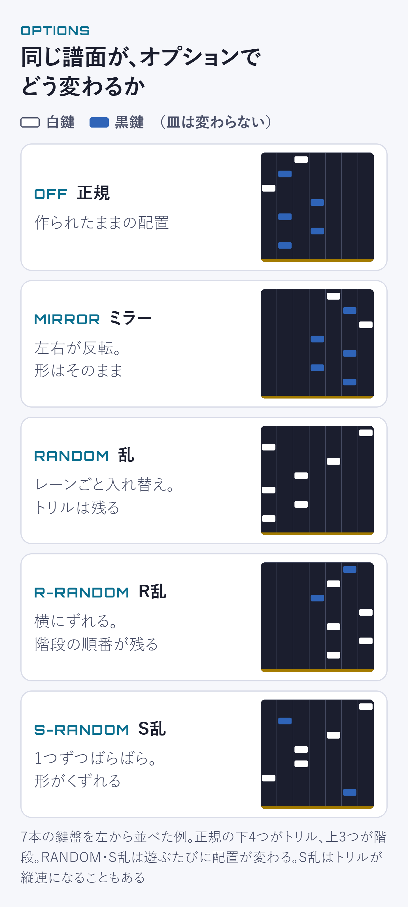

📑 文章目录（13 节）
本文将讲解 IIDX（beatmania IIDX / 弐寺）中RANDOM（乱）、S-RANDOM（超乱）等谱面配置选项的各自区别，以及应该从什么时候开始用、如何区分使用。
- RANDOM（乱）是将键盘轨道整体随机互换的选项。每次游玩配置都会变化，适合不靠背谱的纯地力练习
- 建议在用正规谱面玩过大量曲目、掌握基本指法（运指）之后再开始使用。参考时机为七段～八段、开始游玩 ☆10 曲目的阶段
- S-RANDOM（超乱）会将每个音符逐一打散重新分配，主要用于练习纵连和硬按（ガチ押し）
- 不要只依赖 RANDOM（乱），也要保留用正规和 MIRROR（镜）按键的能力。DP 模式中正规系配置尤其重要
谱面配置选项的种类
通过选项可以改变谱面的按键排列。无论选择哪一种，转盘（皿）都会保持原样不变，发生变化的只有键盘轨道的排列。
| 选项 | 俗称 | 变化方式 |
|---|---|---|
| OFF | 正规 | 保持原始制作的配置 |
| MIRROR | 镜、镜像 | 将左右排列整体反转 |
| RANDOM | 乱 | 将 7 条键盘轨道整体随机互换 |
| R-RANDOM | R乱 | 将轨道像循环移位一样整体平移（保留相邻顺序） |
| S-RANDOM | S乱、超乱 | 将所有音符逐个完全打散重新分配 |
| H-RAN | H乱 | 在 S-RANDOM 的基础上减少同一键位连打的概率（小键盘数字 8 键开启） |

此外，H乱是通过小键盘开启的选项。使用小键盘选项游玩时，分数不会被保存记录，请将其纯粹视作练习用途。
使用 RANDOM（乱）的原因
如果一直用正规谱面反复玩同一首曲子，确实会因为记住配置而逐渐按得动。这虽然也算一种进步，但即时处理初见配置的能力（地力）却很难得到提升。
开启 RANDOM（乱）之后，哪怕是同一首曲子，每次游玩的按键配置都会不一样。由于无法依赖背谱，它就变成了看谱并当场反应按键的练习。即便反复刷同一首曲子也能保持练习效果，这正是它的优势所在。
另外，对于正规配置非常难按的曲目，如果用 RANDOM（乱）抽到了好按的配置（好随机 / 当たり配置），通关就会轻松很多。当然，反过来也可能会抽到很难按的配置（烂随机 / ハズレ）。
RANDOM（乱）应该从什么时候开始用？
建议在用正规谱面游玩各种曲目、掌握基本指法（运指）之后再开始使用 RANDOM（乱）。如果在指法尚未成型时就开启 RANDOM，每次配置变动都会导致手指分配跟着乱掉，反而难以养成稳定的指法。
按段位来说，考过七段～八段、开始打 ☆10 的时期大致就是开始启用的节点。等到准备冲击九段时，用 RANDOM（乱）广泛刷 ☆11 就会成为日常练习的核心。
不论目前是什么段位，只要符合以下任意一种情况，就可以试着逐步引入 RANDOM（乱）：
- 用正规谱面时，渐渐只盯着那几首曲子反复玩
- 一打没玩过的初见曲，表现就比熟悉的曲子大幅崩盘
- 遇到了正规配置怎么都觉得特别别扭难按的曲子
关于指法（运指）的基础知识，请参考这篇文章。
也要保留正规与 MIRROR（镜）的能力
如果一味只开 RANDOM（乱），反而会导致按正规配置（谱师设计好的原始配置）的能力退化。段位认定中只能选择正规或 MIRROR（镜），不能使用 RANDOM 或 S-RANDOM。平时练习时，记得把正规/镜和 RANDOM 结合起来一起练。
各选项的区分用法
RANDOM（乱）：日常练习的基础
由于 RANDOM（乱）只是将轨道整体互换，谱面的基本形态（楼梯、交互、同时押的组合结构）仍然会保留下来。因此曲目的整体难度不会发生剧烈变化，非常适合日常地力训练。关于用 RANDOM 广泛铺平 ☆11・☆12 的具体方法，在地力提升指南中有详细说明。
R-RANDOM（R乱）：适合想保留谱面形态的曲目
R-RANDOM（R乱）是将轨道横向循环平移，因此会保留正规或 MIRROR（镜）的键位排列顺序。遇到楼梯结构很工整的曲子，只想保留原始形态而单纯改变手位时，就可以用它。
S-RANDOM（超乱）：用于练习纵连与硬按（ガチ押し）
S-RANDOM（超乱）会将每个音符逐一随机打散，因此原有的同时押组合和楼梯结构会被彻底打乱，变成类似乱打的谱面。同时，同一键位连续出现音符的纵连也会大幅增加，因此比起日常刷通关，它更适合用于针对弱项的专项训练。
- 不擅长纵连：挑选 BPM 偏低、纵连较多的 ☆10～11 曲目开启 S-RANDOM（超乱）练习。只要是 BPM 120～150 左右的曲子都能起到练习作用，按 BPM 排序挑曲即可
- 练习硬按（ガチ押し）：用 S-RANDOM（超乱）打 BPM 140 以下的曲目，练习将音符按横向排列来读谱
给高速曲开 S-RANDOM（超乱）会导致纵连多到根本按不过来。用于练习时，请选择 BPM 偏低的曲目。
MIRROR（镜）：正规谱面难按的时候
MIRROR（镜）只是将左右排列翻转，谱面本身的结构与正规完全一致。如果某首曲子的难点正好落在非惯用手一侧，开启 MIRROR（镜）往往会变得顺手许多。
随机轨道券（LIGHTNING MODEL）
在街机的 LIGHTNING MODEL 机台上，使用 Premium Area 中的“随机轨道券（ランダムレーンチケット）”即可按照券面指定的轨道排列来游玩 RANDOM。当你想要挑选顺手的配置来打歌时非常实用。轨道券可通过抽卡获取，在开启 RANDOM 选曲时消耗使用。
DP 的选项思路与 SP 不同
在 DP 模式中，不仅可以为左右两侧分别设置选项，还有可以将左右谱面整体互换的 FLIP 选项。不过在 DP 的 ☆12 高难曲中，有很多不适合开 RANDOM（乱）的谱面，因此通过正规、MIRROR（镜）和 FLIP 的组合来应对谱面的能力至关重要。
关于 DP 选项的具体思路，在 DP 入门指南中有详细讲解。
关于 RANDOM（乱）与 S-RANDOM（超乱）的常见问题
RANDOM（乱）应该从什么时候开始用？
建议在用正规谱面玩过各种曲目、掌握基本指法（运指）之后再开始使用。按段位来说，七段～八段、开始打 ☆10 的时期是比较合适的参考节点。如果你觉得自己老是只打那几首曲子，或者一打初见曲就明显崩盘，就可以试着逐步引入了。
RANDOM（乱）和 S-RANDOM（超乱）有什么区别？
RANDOM（乱）是按轨道整体互换，因此谱面原有的形态会保留下来；而 S-RANDOM（超乱）是将音符逐一随机打散，谱面原有的形态会被彻底破坏，变成类似乱打的配置。
用 RANDOM（乱）会让正规谱面变菜吗？
如果只开 RANDOM（乱），接触和适应正规配置的机会确实会减少。只要平时把正规、MIRROR（镜）和 RANDOM 结合起来一起使用，就完全不用担心这个问题。
开 H乱 打出的分数会保存记录吗？
H乱是通过小键盘开启的选项，使用小键盘选项进行的游玩不会保存分数记录。把它纯粹当作练习工具就好。
总结
开启 RANDOM（乱）后每次配置都会变化，能够进行不依赖背谱的纯地力练习。建议先用正规谱面练好基本指法，再逐步引入 RANDOM，同时也要保留打正规和 MIRROR（镜）的能力。至于 S-RANDOM（超乱），则适合选 BPM 偏低的曲目用来练习纵连与硬按（ガチ押し）。
各段位具体应该练习什么难度的曲目，请参考段位认定参考标准一览。